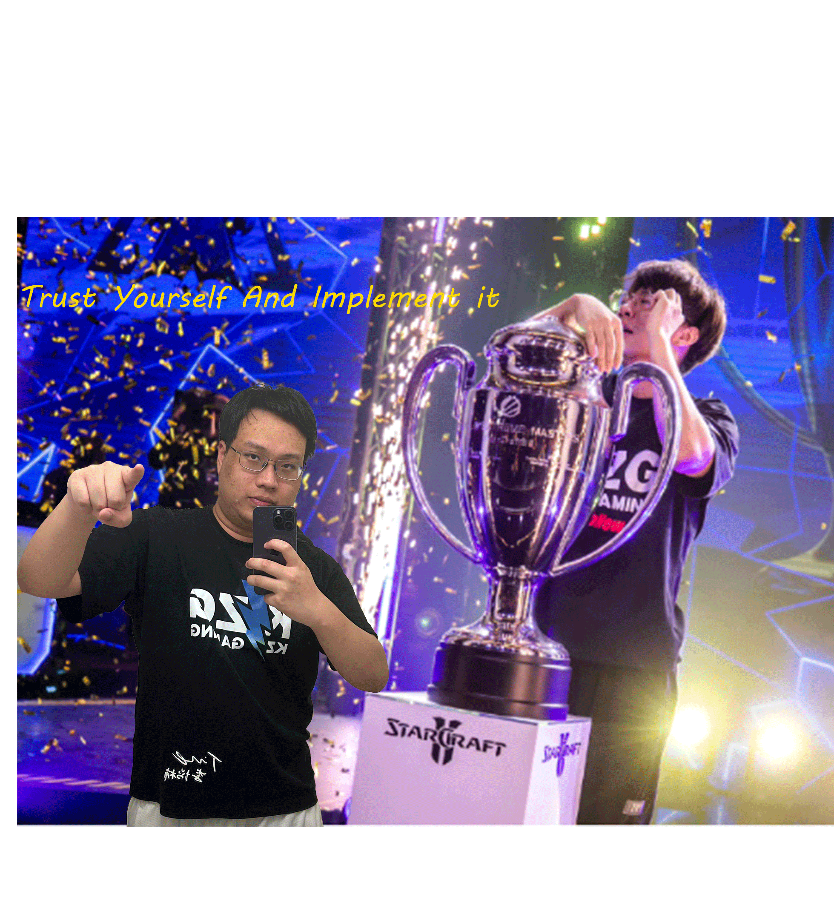

Hello, my name is Jiachen Li. I am a Junior student at Syracuse School of Information Studies, majoring in Information Management & Technology . Focus on Certified Information Systems Auditor® (CISA) in the short term. I pay close attention to international affairs and information system security.
After two years of study and internship experience, I now have the ability to manage projects and audit processes. I am now deepening my skills in this area of data analysis as well as auditing information systems in cloud networks.
I am looking forward to utilizing my abilities in the future in the areas of Cloud Web Information Systems as well as Project Management.
© 2020